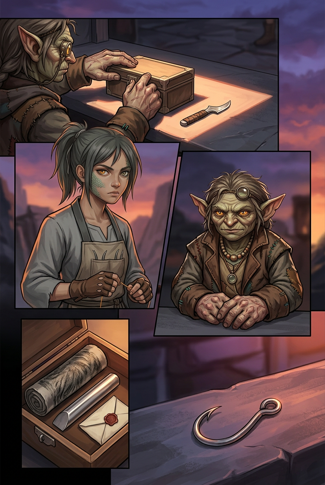
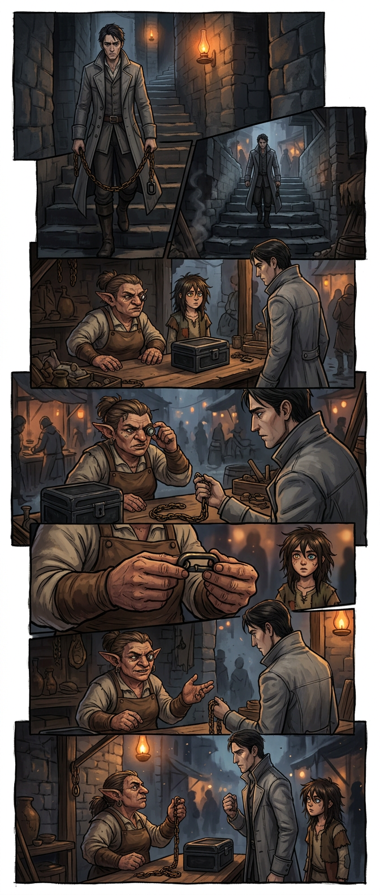
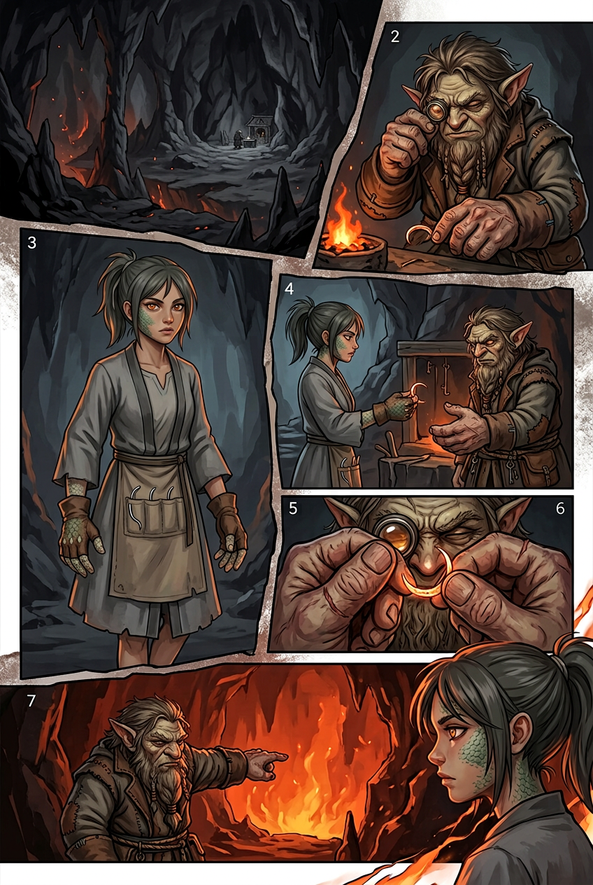
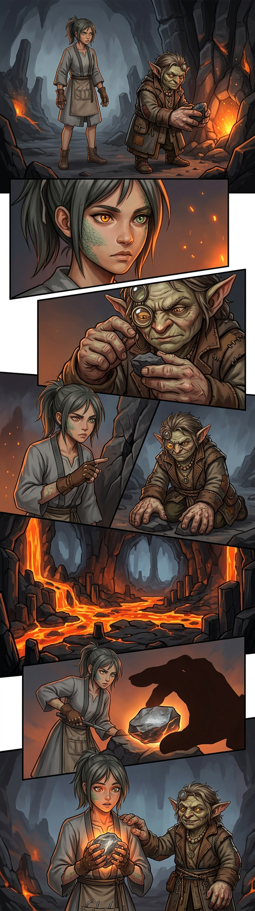
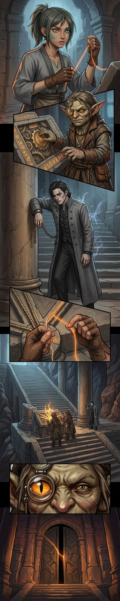
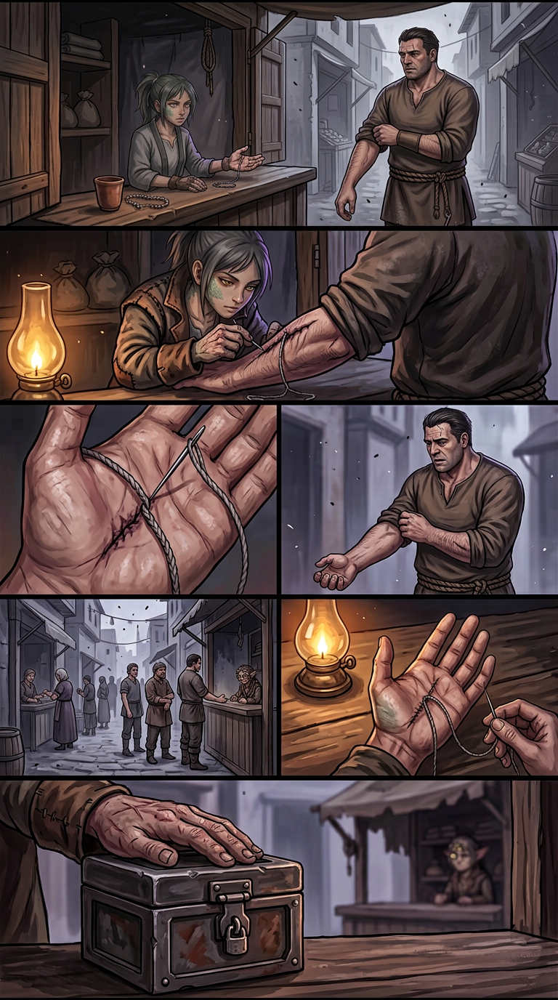

Chapter 003 — The Hand That Opens
Arc I — The Unspooling · Agnikhand · 10 pages · complete · English + Hindi. Pick a page, or read straight through.

001
002
003 004
004 005
005 006
006
007 008
008
009
010Chapter 003 — The Hand That Opens / वह हाथ जो खोलता है — CLOSE-OUT
Status: COMPLETE — 10 pages (001–010), EN + Hindi scripts, 10 page images, cast files, glossary + locations grown in-step. Arc: I — The Unspooling · Sector: Agnikhand · Open PR for this work: Kyabtao/Manga#3 Chain-stop budget: ONE, spent on Page 009 (held-stop oath, Rekhak's confession in the Knot & Nail).
Canon rules added in Chapter 3 (binding forward)
- Hand-school is the canonical term for stitch-grammar family. The cutter taught Ira's stitch; Ira's stitch did not teach the cutter. The age-gap is forty years.
- The supply line is one person, not a network: same thread, same gauge, same whorl-knot, across forty years. Six pieces of thread total (cut-end + five gifts), all in the lockbox.
- The posting order transfers custody of the blink census to the Knot & Nail. Kessa refused to sign the receipt. The lockbox now holds: cut-end, census, posting order, gift-thread, sixth thread, seventh thread (child's knot), and the sewer's thread (from Ira's palm).
- The four notes match wrongly through Rekhak's chain: the chain recorded the melody's shape from the room where the oath was sworn. Wrong key, wrong pitch, same shape. The four notes are an echo, not a voice.
- The oath-link holds two oaths after Rekhak's confession: "I saw what you are. I lied to protect it." Both true. The chain records them honestly. Ira can read the link but chooses not to carry its weight yet.
- The stitch moves in response to knowledge: Pages 007–008. The stitch trembles when Ira learns the truth about its origin. Not opening; recognizing.
- The cutter demonstrates: nightly visits to Bhan escalate from practice to teaching. The charcoal mark is read and kept. The cutter finishes the lesson (Page 007) and leaves the basin.
- The basin's filing instinct: the lockbox becomes the market's safe-deposit. Kessa refuses all deposits. The coin-on-slate is her counter-offer grammar.
- Kessa's interiority = hands-only (continued). Loupe up = not appraising. Loupe down = apprasing. Tally-thread knots = filed facts.
- Rekhak's chain hum drifts: the four-note echo passes through the chain when he walks the row. Not a stop; a drift.
- The Loom never speaks. The Spindle is steady. Ash falls as always.
Open threads (carry to Chapter 4+)
| Thread | Pages | Payoff |
|---|---|---|
| The cutter's name | 003–007 | Cutter left the basin; may return |
| The supply line's destination | 007–010 | The terraces; the Council Stair |
| The four notes, wrong match | 006 | Correct match deferred |
| The oath-link, two oaths | 009 | Ira must choose to carry its weight |
| The Mendery connection | referenced | Ch. 005 |
| The fifth thread at the Council Stair | 010 | The supply line reaches the terraces |
| Kessa's lockbox — seven objects | 001–010 | The box as portrait |